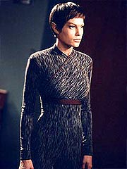
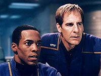
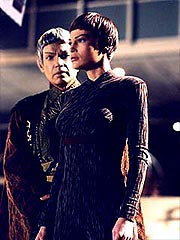
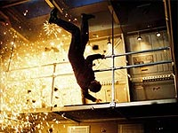

|
MANCHETE
DO EPISDIO
Temporada
termina com novo piloto
e nova misso para a Enterprise
Episdio
anterior | Prximo
episdio
Sinopse:
Uma sonda chega s imediaes da Terra e abre fogo contra o planeta. Um recorte da Flrida Venezuela causa enorme devastao e mata milhes de pessoas. Aps o disparo, a nave entra, descontrolada, na atmosfera.
A Enterprise recebe um chamado do almirante Forrest, que convoca a nave de volta em vista da emergncia planetria. Conforme ele atualiza as estimativas de mortos, Trip comea a temer que sua irm, que vive na Flrida, tenha perecido no ataque.
Enquanto isso, no mundo natal Klingon, o Alto Conselho d ao renegado Duras a ltima chance de capturar Archer e reaver seu posto de capito. Por duas vezes o humano j escapou das mos dos Klingons.
 No caminho de volta, a Enterprise interceptada por vrias naves Suliban. Num ataque-surpresa, os aliengenas sequestram Archer. Silik, que comanda os agressores, diz que no teve nada a ver com o ataque Terra, mas que tem algum que deseja falar com o capito. Embora relutante, o capito concorda, depois de Silik dizer que a conversa est ligada ao futuro de sua espcie.
Archer descobre que quem quer falar com ele o mentor intelectual dos Suliban, que supostamente vive no futuro. Ele conta ao capito que a espcie responsvel pelo ataque Terra conhecida pelo nome de Xindi. Eles fazem parte de uma outra faco na Guerra Fria Temporal, e foram informados de que a humanidade iria destruir sua espcie no sculo 25 e decidiram eliminar esse risco j no sculo 22. A sonda devastadora foi apenas um teste, segundo o informante do futuro. O prximo ataque ser fatal para o planeta inteiro.
O capito devolvido Enterprise e tenta convencer T'Pol de que mais uma vez eles esto s voltas com a Guerra Fria Temporal. Mas no h muito tempo para debate. Logo que a NX-01 chega s proximidades do Sistema Solar, sofre um ataque-surpresa de uma nave Klingon comandada por Duras. Embora sofra danos, a Enterprise escapa graas ajuda providencial de outras naves da Frota Estelar na regio. Sem opo, Duras bate em retirada.
Na Terra, Archer reporta o que lhe foi revelado ao almirante Forrest, que no entanto no parece muito convencido. O capito pede autorizao para seguir para as coordenadas fornecidas pelo informante do futuro com a Enterprise e tentar impedir os Xindi de conduzir o segundo ataque, mas Forrest est relutante -- e o sentimento s aumenta quando o embaixador Soval revela que as coordenadas esto dentro da Expanso Dlfica, uma espcie de Tringulo das Bermudas espacial, que causa demncia e outros efeitos nefastos a quem quer que entre naquela regio da galxia.
Apesar disso, Archer insiste com o plano e diz que pode provar que os Xindi receberam um aviso do futuro. Ao visitar o hangar em que esto recolhidos os destroos da sonda Xindi (que carregava um tripulante-suicida), ele mostra que algumas peas apresentam datao quntica negativa, o que, segundo sua interpretao, mostraria que se tratam de equipamentos trazidos do futuro.
Com as novas evidncias, Forrest promete tentar convencer o Alto Comando da Frota Estelar a liberar Archer para a misso. Aps os debates, a deciso a de que o capito pode prosseguir. Resta a Phlox e T'Pol decidirem se permanecero a bordo. O mdico resolve continuar com a NX-01, mas T'Pol ordenada pelo Alto Comando de seu planeta a deixar a nave e partir para Vulcano.
Enquanto Archer visita o local de construo da NX-02, em rbita, a Enterprise est recebendo atualizaes dos sistemas. Entre as novidades esto os novos tubos de torpedos fotnicos, que tornaro a nave mais poderosa em combate. No casulo de inspeo, Archer discute com Forrest a deciso de trazer alguns oficiais militares a bordo da Enterprise para a misso.
A Enterprise est pronta para sua nova misso. Antes disso, entretanto, ela dever passar em Vulcano para deixar T'Pol. No meio do caminho, aps conversar com Phlox, a Vulcana decide permanecer a bordo e desistir de sua carreira junto ao governo de seu planeta. Archer ento ordena que sua nave parta rumo Expanso Dlfica.
 Antes que possam adentrar a regio, a NX-01 volta a sofrer um ataque dos Klingons. Usando ousadas tticas de combate e os novos torpedos fotnicos, a Enterprise destri a nave de Duras e exclui definitivamente o perigo. Resta agora enfrentar o desconhecido na Expanso Dlfica, caa dos misteriosos Xindi...
Comentrios:
A partir de agora, quando se referir ao piloto de
Enterprise, especifique: qual deles? Pois "The Expanse" claramente um segundo piloto para a srie. Chegamos at a "rever" a NX-01 deixando a doca espacial em rbita da Terra!
O episdio em si excelente: divertido, emocionante, rico em acontecimentos, agitado, dramaticamente bem conduzido. O nico problema o quanto ele capaz, de uma tacada s, de desvirtuar a srie. incrvel. At mesmo a sequncia de abertura perdeu todo o sentido com a nova "misso" que a Enterprise recebeu. E considero extremamente perigoso simplesmente "resetar" a premissa da srie. Como conduzi-la a partir de agora, diante da terrvel ameaa Xindi?
A idia criar um arco contnuo de histrias, capaz de prender o telespectador, enquanto Archer e companhia vagam pela Expanso Dlfica procura dos misteriosos aliengenas. O problema que, uma vez que se entra num troo desses, ele redefine a premissa da srie. E impossvel continuar fazendo episdios uma vez que o problema resolvido.
como se a Voyager voltasse para casa e continuasse a ter episdios ambientados na Terra: podemos at aceitar tal idia, mas temos de concordar que seria uma nova srie, com outra premissa, retendo apenas os personagens originais.
 A mesma armadilha pode ser criada aqui. Vai ser difcil de engolir, daqui a uma temporada, uma linha do tipo: "E agora Archer finalmente resolve o mistrio Xindi e sai da Expanso Dlfica, para continuar suas aventuras pela galxia". Portanto, devemos aceitar que, se os prprios roteiristas se levam a srio,
Enterprise passar a ser uma srie sobre os enigmas da Expanso Dlfica. Esquea a formao da Federao, os conflitos entre Vulcanos e Andorianos, a expanso de influncia da Terra. Do conjunto original, resta apenas a Guerra Fria Temporal -- sem dvida o mais questionvel dos elementos introduzidos em
"Broken Bow".
O dmonio mostra sua verdadeira face, e a possibilidade de um reset button aumenta a cada novo episdio. E o que entristece saber que as mudanas foram motivadas por uma crise nos ndices de audincia. Um fenmeno semelhante aconteceu por duas vezes na histria de
Jornada nas Estrelas. A primeira foi na virada do segundo para o terceiro ano da
Srie Clssica, com a introduo de mais ao, menos crebro e menos verba para a realizao dos episdios. A segunda foi com a introduo de Seven of Nine em
Voyager, na virada da terceira para a quarta temporada. (As outras sries de
Jornada, A Nova Gerao e Deep Space Nine, por serem exibidas em syndication, no sofreram tanto com as presses dos ndices de audincia.)
Com base nos exemplos histricos, podemos estimar em 50% a chance de as mudanas apresentadas por
"The Expanse" surgirem algum efeito positivo. Mas mesmo em
Voyager, o caso bem-sucedido, a soluo foi apenas paliativa. No final das contas, tanto a audincia quanto a qualidade continuaram caindo. A mesma armadilha pode acontecer com
Enterprise. E as mudanas aqui so muito mais radicais do que a mera introduo de um novo personagem.
Mas deixemos a anlise do futuro da srie para o futuro e nos concentremos agora no episdio em si: o que
"The Expanse" tem a oferecer?
Para comear, uma histria cheia de elementos com participao ativa. Confesso que fiquei feliz em rever o velho Silik e os Sulibans, praticamente esquecidos desde a metade da temporada. E a interveno do "Cara do Futuro" tambm ajuda a complicar a situao: de que lado afinal ele est? Quantas faces diferentes? O que essa Guerra Fria Temporal ?
Para variar, "The Expanse" no oferece respostas. Alis, engraado notar como a identidade do "Cara do Futuro" se tornou uma "no-questo". Ao final da primeira temporada, tudo que os fs queriam saber era quem era essa figura misteriosa. Agora, a srie caminha de tal modo que ningum mais se preocupa com isso. Infelizmente, o "Cara do Futuro" virou apenas mais um mecanismo Deus Ex Machina, felizmente bem utilizado aqui.
 A participao de Duras tambm ajuda a requentar o episdio, estabelecendo elos com segmentos anteriores e proporcionando uma boa dose de ao. A sequncia final de confronto dos dois muito boa e relembra uma verso em "fast-forward" da clssica batalha entre Kirk e Khan na nebulosa Mutara, em
"A Ira de Khan".
Por conta do ataque Terra, a tripulao ganhou uma nova cara. Aparentemente, est todo mundo de saco cheio de explorao espacial pacfica e o que querem agora dar porrada. Isso transparece mais claramente nas atitudes de Archer e Trip, que com T'Pol fazem o trio principal da srie.
Apesar de toda a sua qualidade narrativa, impossvel deixar de notar alguns mecanismos viciados e pouco convincentes espalhados pela histria. Primeiro, por que a maldita sonda Xindi tinha um tripulante? Ser que s para criar um eco em uma recente histria de radicais suicidas que se matam em seus prprios veculos voadores para causar morte e destruio?
Segundo, aquele papo de datao quntica, com nmeros negativos provando que um objeto vem do futuro me parece a conversa mais fiada que eu j vi em matria de viagens no tempo em Jornada nas Estrelas.
Terceiro, quer dizer que em 2153 a Enterprise NX-01 j tinha torpedos fotnicos?! Para que fazer uma srie no sculo 22 se aps dois anos a tecnologia vai estar equivalente ao que vimos nas outras sries?
Quarto, como os Sulibans conseguiram invadir to rapidamente a Enterprise e sequestrar o capito Archer? Nem em
"Broken Bow", onde eles eram uma surpresa total, foi possvel sequestrar Klaang to rapidamente...
Passando por cima desses detalhes e colocando de lado por um instante as consequncias desse episdio para a srie, d para se divertir muito com
"The Expanse". Mesmo quem crica pode gostar deste aqui. Mas a verdade que este o ltimo segmento da velha
Enterprise e o primeiro de uma nova srie. Se voc gostou de
Enterprise at aqui, ao menos conceitualmente, tema pelo futuro. Se voc no gostava da premissa desde o incio, a est uma segunda chance.
Citaes:
Tucker - "Maybe you should pay more attention to upgrading those weapons, so you can blow the hell out of these bastards when we find them!"
("Talvez voc devesse prestar mais ateno atualizao dessas armas, para que possamos explodir os filhos da me quando os encontrarmos!")
Tucker- "I cant wait to get in there, captain. Finding the people who did this. And tell me we wont be tiptoeing around. None of that non-interference crap TPols always shoving down our throats. Maybe its a good thing shes leaving."
("No posso esperar para chegar l, capito. Encontrar as pessoas que fizeram isso. E no diga que estaremos tateando em volta. Nada daquela bobagem de no-interferncia que T'Pol est sempre enfiando em nossas goelas. Talvez seja uma coisa boa que ela est partindo.")
Archer - "Well do what we have to, Trip. Whatever it takes."
("Vamos fazer o que tivermos de fazer, Trip. Tudo que for necessrio.")
Duras - "Surrender, or be destroyed."
("Renda-se, ou seja destrudo.")
Archer - "Go to hell!"
("V pro inferno!")
Trivia:
 Rick Berman: "Acho que nosso episdio final da temporada vai ser bem atraente porque vamos fazer um cliffhanger que colocar um novo rumo na srie conforme ela chega ao terceiro ano. Eu no quero realmente dar detalhes, mas no estamos falando de uma pequena mudana. Estamos falando sobre uma mudana que vai, em algum grau, alterar nossa misso e, em algum grau, mudar o tom da srie. Estamos muito empolgados."
Rick Berman: "Acho que nosso episdio final da temporada vai ser bem atraente porque vamos fazer um cliffhanger que colocar um novo rumo na srie conforme ela chega ao terceiro ano. Eu no quero realmente dar detalhes, mas no estamos falando de uma pequena mudana. Estamos falando sobre uma mudana que vai, em algum grau, alterar nossa misso e, em algum grau, mudar o tom da srie. Estamos muito empolgados."
As filmagens foram encerradas em 8 de abril, aps oito dias de filmagem. Os cenrios incluram a Cmara do Conselho Klingon, um Hangar da Frota Estelar e a "Cmara Temporal" de Silik. As filmagens tambm ocorreram no estacionamento da Paramount, que fez as vezes de Chinatown e do quartel-general da Frota Estelar, em San Francisco.
Rick Berman: "No tanto um cliffhanger, mas uma amostra tantalizante do que a prxima temporada vai trazer. A prxima temporada vai lidar com a Enterprise sendo enviada numa misso que pode durar muitos episdios."
Ficha
tcnica:
Escrito por Rick Berman &
Brannon Braga
Direo de Allan Kroeker
Exibido em 21/05/2003
Produo:
052
Elenco:
Scott
Bakula como Jonathan Archer
Jolene Blalock como
T'Pol
John Billingsley
como Phlox
Anthony Montgomery
como Travis Mayweather
Connor Trinneer como
Charlie 'Trip' Tucker III
Dominic Keating como
Malcolm Reed
Linda Park como Hoshi Sato
Elenco convidado:
Vaughn Armstrong como almirante Forrest
Gary Graham como Soval
John Fleck como Silik
James Horan como Figura Humanide
Daniel Riordan como Duras
Dan Desmond como Chanceler Klingon
Serena Scott Thomas como Rebecca
Gary Bullock como membro do Conselho
Bruce Wright como dr. Fer'at
Josh Cruze como capito Ramirez
David Figlioli como tripulante Klingon 1
L. Sidney como tripulante Klingon 2
Jim Lau como Maitre d'
Episdio
anterior | Prximo
episdio
|